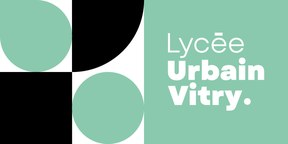

2
de
Seconde EMNB
Études et modélisation numérique du bâtiment
SEQ01
SEQ02
SEQ03
Compétences
🎮 Jeux

Vérifier un certificat
Page réservée à l'enseignant : recopie les informations lues sur le certificat.
Séance
seq01-s1 — Découvrir les acteurs de la construction
seq01-s2 — Les phases de l'acte de construire
seq01-s3 — Application croisée et résolution de problèmes
seq01-s4 — Jeu de rôle, transition numérique et évaluation
seq02-s1 — Découverte du dossier : plan de situation et plan de masse
seq02-s2 — Plans de niveaux et façades
seq02-s3 — Les coupes et les échelles
seq02-s4 — Analyse de l'évolution des plans : de l'esquisse à l'APD
seq03-s1 — Pourquoi l'IFC ? Jeu Mission IFC
seq03-s2 — Lire la maquette du projet
seq03-s3 — Répondre à l'économiste : tickets quantitatifs
seq03-s4 — Évaluation : les futurs bureaux de l'agence
Nom tel qu'écrit
Date (jj/mm/aaaa)
Scores dans l'ordre, séparés par des espaces
Code lu sur le certificat
Vérifier